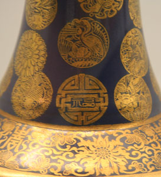
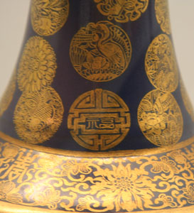

{kind=link}
The flower vase below has a beautiful praying mantis design.

A dragon design is shown on the blue and white porcelain below.
")
The cloud and dragon design 云龙纹 is also used on the porcelain plate below. It is a very popular design, appropriate because dragons spend most of their time flying around in clouds.

Bodhidharma 达摩 was an Indian monk who travelled to China, settled in Luoyang and founded the Chan (Zen) school of Buddhism. He is a popular figure to display in temples and other locations. A porcelain figure of Bodhidharma is shown below.
{kind=link}
The photograph below shows a Mongol style Duomu 多穆壶 pitcher from the Jingdezhen Kiln.
{kind=link}
Duomu are tubular shaped pitchers that were used in the Yuan, especially by Mongolians and Tibetans ethnic groups to store milk and utensils. They are often decorated with a corolla 花冠 (a band of flowers) and other floral decorations.

The blue and white porcelain flat sided vase 抱月瓶 from the Qian Long reign below uses an eight Buddhist emblems 八吉祥, also called eight auspicious treasures 佛教八宝, design. Emperor Qian Long was a devout Buddhist. The treasures are (1) Wheel 轮, (2) conch shell 螺, (3) umbrella 伞, (4) canopy / flag 盖, (5) lotus 花, (6) jar 罐, (7) fish 鱼, and (8) mystic knot 长. It imitates a similar vase from the Yong Le reign in the Ming.
{kind=link}
The gold color for the dragon in the artifact below was produced using gold overglaze 金彩. Gold overglaze is believed to have originated in the Song. The Ding Kiln 定窑 was best known for the technique.
{kind=link}
Fencai 粉彩 is a style that emerged at the end of the Kangxi reign, succeeding the wucai style. In comparison, Fencai uses softer colors, which are based on enamel coloring. The hanging vase 壁瓶 below from the Jia Qing reign uses a Fencai style.
{kind=link}
Chen Guozhi 陈国治 was a well-known artist at Jingdezhen Kiln. The brush holder below has Chen Guozhi's stamp underneath.

The vase below also uses gold overglaze. This is a type of example of the generic overglaze 釉上彩 technique, were the gold or other coloring is applied over the top of a previously fired base glaze layer. Glazes, gold, or enamel can be used as the overglaze color material. After application of the overglaze the artifact is fired again at a temperature of between 600 and 900 degrees Celcius.
 

{kind=link}
In the Qing Dynasty, especially during the Kangxi reign, there were innovations from introduction of foreign techniques and new developments of traditional techniques. Jingdezhen Kiln experimented with different techniques using gold leaf and mixing gold powder with lead oxide. They created some great porcelain items, like the piece above.

Porcelain jewelry is less common. The picture below shows a porcelain thumb ring.
{kind=link}